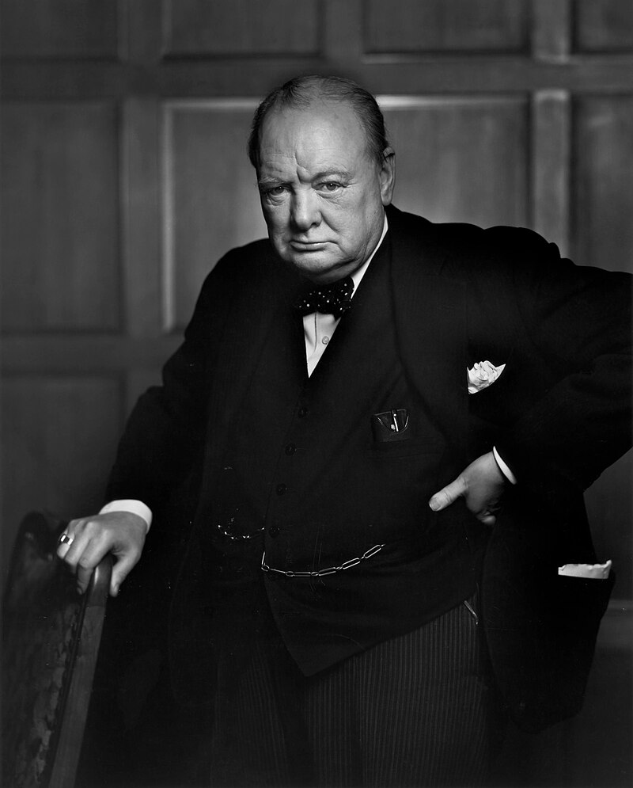

Sir Winston Leonard Spencer Churchill (Woodstock, Oxfordshire, Inglaterra; 30 de novembro de 1874 – Londres, 24 de janeiro de 1965) foi um militar, estadista e escritor britânico que serviu como primeiro-ministro do Reino Unido de 1940 a 1945, durante a Segunda Guerra Mundial, e novamente de 1951 a 1955. Além de dois anos entre 1922 e 1924, foi membro do Parlamento (MP) de 1900 a 1964 e representou um total de cinco círculos eleitorais. Ideologicamente liberal econômico e imperialista, foi durante a maior parte de sua carreira um membro do Partido Conservador, que liderou de 1940 a 1955. Também foi membro do Partido Liberal de 1904 a 1924.
If you're going through hell, keep going.
In shadowed halls of war and flame,
He rose with voice no fear could tame.
A lion's roar in darkest night,
Sir Winston led with steadfast might.
With cigar clenched and gaze so keen,
He spoke of hope where none had been.
Through storm and strife, he stood his ground—
A bulwark when no peace was found.
History etched his name in stone,
A statesman, bold, yet still alone.
But through the smoke and battle’s chill,
Endured the will of Churchill still.